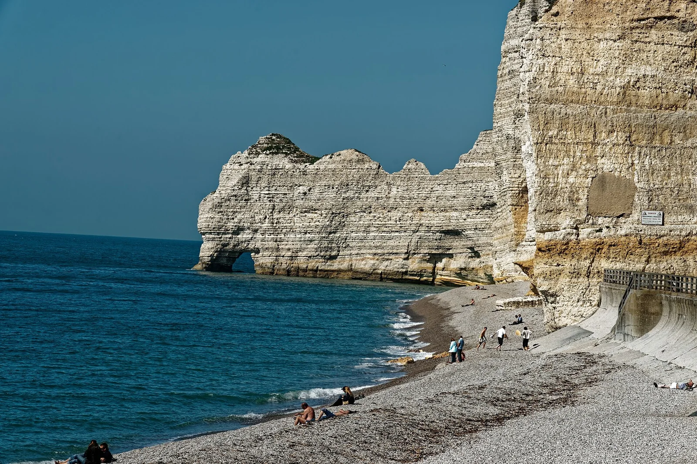

Étretat
Seine-Maritime, France · kayak, baignade, snorkeling

Célèbres falaises et arches de craie au-dessus d’une plage de galets : kayak au pied des aiguilles et baignade par mer calme.
- Lieu
- Seine-Maritime, France
- Niveau
- Débutant
- Activités
- kayak, baignade, snorkeling
- Type d'eau
- Mer / océan
- Coordonnées
- 49.71, 0.20 (position approximative du secteur)
Dangers à connaître
- Chutes de pierres au pied des falaises.
- Courants sous les arches.
- Vérifie l’heure de la marée avant de passer les arches : on s’y fait vite piéger au pied des falaises.
Le conseil d'Ocean Buddy
Sors en kayak voir l’Aiguille seulement par mer calme.
Ouvrir dans Ocean Buddy Télécharger sur l'App Store
Source : Description historique Ocean Buddy · vérification externe en attente.